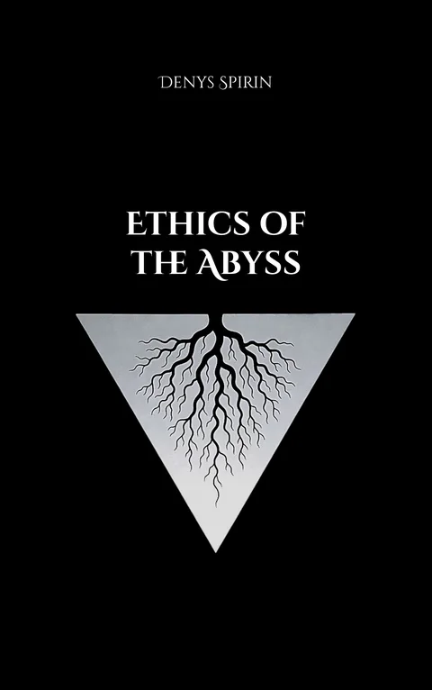

Volume III
Ethics of the Abyss
Every moral verdict is a derivative of an ontology the subject never chose. This book traces the mechanism from installation through guilt and delegation to the self-sustaining entity called the ontovirus and arrives at amorality: a position outside the jurisdiction of both morality and immorality, where the subject authors his values knowing they rest on nothing.
Main links
Contents
- Chapter 1Moral judgment is never neutral: the same act becomes good or evil depending on the ontology already installed behind it.
- Chapter 2Moral certainty is built from childhood commands, school narratives, public rituals, language, media, and institutional repetition.
- Chapter 3A construct is an ontology that produces values, duties, guilt, permissions, prohibitions, and the illusion of conscience.
- Chapter 4Haidt’s moral intuitions are re-read as deeply installed constructs, not as evidence of innate moral truth.
- Chapter 5Human rights, utilitarianism, effective altruism, and Kantian ethics are shown to depend on hidden postulates they cannot justify.
- Chapter 6Morality functions as an antivirus: it protects the ontology beneath it by making certain questions feel monstrous.
- Chapter 7Constructs reproduce like viruses, using ritual, social pressure, heresy-hunting, enemies, and guilt to keep the host aligned.
- Chapter 8The ontovirus is defined as a living construct that survives by feeding on repeated action, even when belief has faded.
- Chapter 9Moral progress is treated as ontoviral mutation: the system updates its values, selects new scapegoats, and calls the update justice.
- Chapter 10Ontoviruses evolve like species: they mutate, fragment, go extinct, return from archives, and survive only through delegated will.
- Chapter 11Moral agency is exposed as delegation: the subject receives ready-made verdicts from the system and mistakes them for his own judgment.
- Chapter 12The deeper capture is epistemic: the ontovirus decides what counts as fact, evidence, proof, source, and valid reasoning.
- Chapter 13Kant, Aristotle, Spinoza, and Nietzsche are read as systems that install protocols of judgment and call them reason, nature, substance, or life.
- Chapter 14MacIntyre, Parfit, Butler, and Singer repeat the same move through tradition, analytical rigor, deconstruction, and optimization.
- Chapter 15Collective nouns like nation, society, state, market, and Church are stripped of mystique until concrete beneficiaries appear behind them.
- Chapter 16The ontovirus breaks when an abstraction becomes a specific person: a brother, friend, child, lover, or enemy with a face.
- Chapter 17Systems defend themselves by preventing the personal space from opening through military language, distance, bureaucracy, algorithms, and automation.
- Chapter 18The constructive space is named as the Right-Hand Path; the personal space becomes the Left-Hand Path recovery of direct agency.
- Chapter 19Self-closure is the state after the ontoviruses fall: the subject either returns to faith, dissolves into annihilation, or creates himself.
- Chapter 20Antinomianism is introduced as the test that breaks taboo, survives the threat, and proves the law was only an installed boundary.
- Chapter 21False transgression is separated from real antinomian work: guilt, rebellion, thrill, and exception-making still keep the old construct alive.
- Chapter 22Amorality is the final position: no replacement code, no new morality, only authored action in concrete encounters and full responsibility for the act.